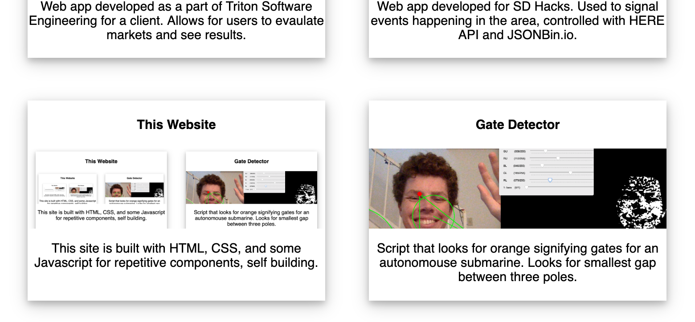

PROJECTS
Chess Tournament Tool
A chess tournament manager written in Java, built for my high school calculus teacher.
A* Pathfinding
Visualizer for the A* pathfinding algorithm. It also includes a small game where a player can move and is chased by squares using the algorithm.
Live Weller

Web app developed as a part of Triton Software Engineering for a client. Allows for users to evaulate markets and see results.
Beacon
Web app developed for SD Hacks. Used to signal events happening in the area, controlled with HERE API and JSONBin.io.
This Website

This site is built with HTML, CSS, and some Javascript for repetitive components, self building.
Gate Detector
Script that looks for orange signifying gates for an autonomouse submarine. Looks for smallest gap between three poles.